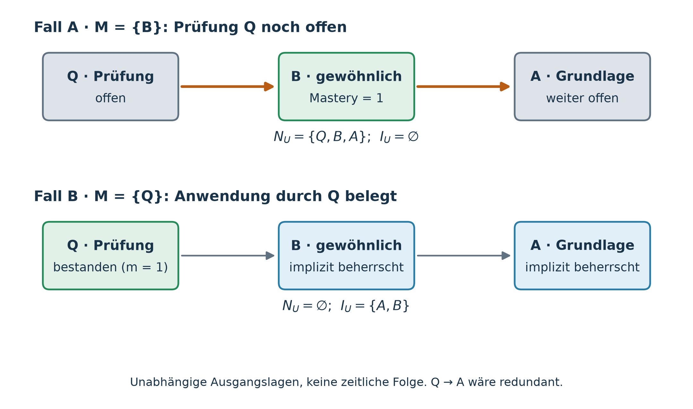
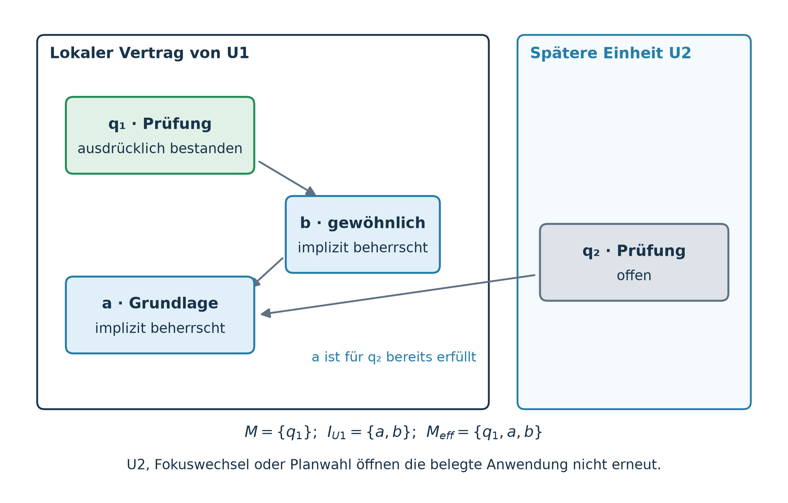
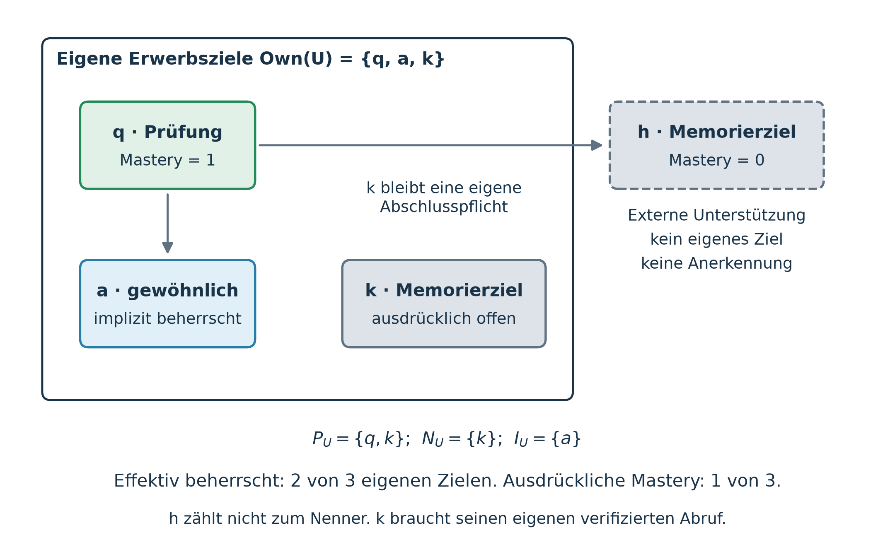
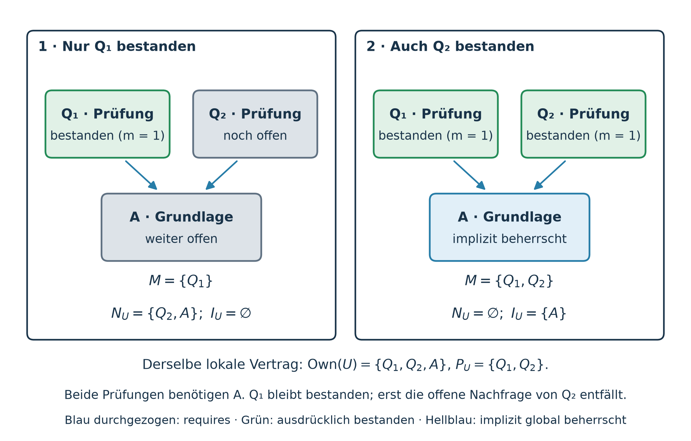
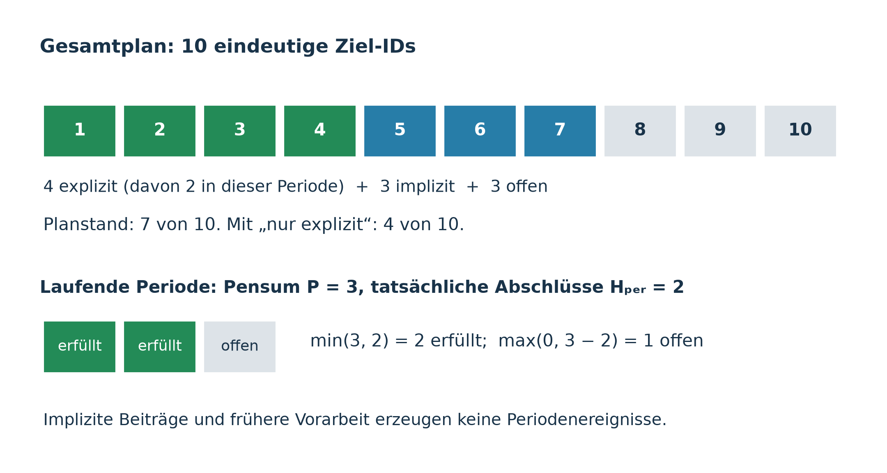

Implizite Beherrschung durch gültige lokale Prüfungen (§13)
Generated artifact. Do not edit manually.
Generated by:
docs/concept/skill-graph/build_spec.pyRegenerate with:cd app && npm run docs:skill-graph:webSource of truth:docs/concept/skill-graph/source/
Sprache / Language: Deutsch (DE) · English (EN) | PDF: Deutsches PDF · English PDF
Kompendium: §§1–5 Kern · §§6–10 Kontext · §§11.1–11.4 Lerneinheiten · §11.5 Einheitsfolge · §12 Planung · §13 Implizite Beherrschung · Anhänge B–F · Anhang A (Regeln & Ampel)
13. Implizite Beherrschung durch gültige lokale Prüfungen
Verbindliche Konzeptkorrektur vom 4. November 2026
Ein ausdrücklicher Erfolg an einem Inhaltsziel belegt Verstehen. Eine gültige Abschlussprüfung kann selbstständige Anwendung der zugehörigen Kompetenzen belegen. Diese implizite Beherrschung ist global ebenso wirksam: Sie erfüllt künftige Voraussetzungen und zählt zum IST. Prüfungs- und Memorierziele selbst bleiben ausschließlich ausdrücklich zu bestehen.
Die Grundidee zeigt eine Lerneinheit mit der Kette \(\nd{Q} \to \nd{B} \to \nd{A}\): Das Prüfungsziel \(\nd{Q}\) setzt das Inhaltsziel \(\nd{B}\) voraus, und \(\nd{B}\) setzt \(\nd{A}\) voraus. Solange \(\nd{Q}\) offen ist, fragt die Prüfung ihre Voraussetzungen \(\nd{B}\) und \(\nd{A}\) noch nach. Hat die Person \(\nd{Q}\) bestanden und ist der lokale Vertrag der Einheit gültig, dann gelten \(\nd{B}\) und \(\nd{A}\) als selbstständig angewandt und damit als implizit beherrscht, auch ohne eigenes ausdrückliches Ergebnis. Die folgenden Unterabschnitte machen daraus eine Mengenformel und nennen die fachlichen Bedingungen, unter denen sie ausgewertet werden darf.
Der Product Owner hat diese Anerkennungsregel am 11. November 2026 bestätigt: Ein eigenes gewöhnliches Ziel gilt als anerkannt, sobald keine offene eigene Prüfung und kein offenes eigenes Memorierziel seiner Einheit es noch benötigt. Gehören die Prüfungen \(\nd{Q_1}\) und \(\nd{Q_2}\) zur selben Einheit und setzen beide \(\nd{A}\) voraus, bleibt \(\nd{A}\) nach bestandener \(\nd{Q_1}\) offen, bis auch \(\nd{Q_2}\) bestanden ist (Abbildung 15); ausdrückliche Mastery von \(\nd{A}\) bleibt jederzeit möglich. Tragfähig ist die Regel nur in Einheiten, die die Gültigkeitsbedingungen aus Abschnitt 13.3 erfüllen.
Der gespeicherte binäre Zustand \(m\) bleibt unverändert das einzige Zielergebnis. Die neue Semantik leitet zusätzliche Erfüllung ab, ohne Rückwärtsschreiben von Mastery, zusätzliche Qualifikationsdatensätze, manuelle Freistellungsprofile oder zweite Teilprüfungen einzuführen. Auf der geprüften Hauptlinie ist dieses Konzept noch nicht implementiert. Maßgeblich ist die aktuelle Konzeptspezifikation.
13.1. Vertrag, Zielumfang und geschützte Zieltypen
Lokaler Vertrag.
Ein lokaler Vertrag gehört zu einer autoritativen Lerneinheit \(U\) aus Abschnitt 11. Er bindet deren eigene Erwerbsziele \(\Own(U)\), die kanonischen Identitäten, die Curriculumrevision und die fachlich geprüfte Bedeutung der eigenen Prüfungen. Andere Quellen nennen ihn auch Anerkennungs- oder Erwerbsvertrag. Der Gesamtumfang \(T(U)\) enthält zusätzlich die Ziele der Kindeinheiten. Er ist kein vergrößerter Ersatzvertrag der Elterneinheit für die Anerkennung. Ein späterer Integrationsanspruch erweitert die Kindverträge nicht rückwirkend. Eine Anzeige, ein temporärer Fokus oder die aktuell ausgewählten Planwurzeln bestimmen diese Zuordnung nicht neu. Abschnitt 11.2 nennt die Felder, die diese Bestandteile tragen.
Geschützte Ziele.
Seien \(Q \subseteq A\) die autoritativ bestimmten Prüfungsziele und \(A_{\mathrm{mem}} \subseteq A\) die Memorierziele; \(K = G \setminus A\) bleibt die Menge der strukturellen Cluster. Für die eigenen geschützten Ziele gelten
\(P_U\) schützt alle eigenen Prüfungs- und Memorierziele vor implizitem Bestehen. Ein Erfolg an einer anderen Prüfung ersetzt weder deren eigene Prüfung noch den verifizierten Abruf ihrer Karten. Orientierung bleibt ein eigener motivationaler Zieltyp, keine dritte Schutzklasse. Ein Orientierungsmarker darf in \(I_U\) liegen; er ist dann abgeleitet erledigter Einstieg, kein fachlicher Kompetenznachweis und keine Behauptung einer tatsächlich geführten Motivationsinteraktion. Unterstützung außerhalb \(T(U)\) vergrößert den Gesamtabschlussnenner nicht. Eine Kompetenz außerhalb \(\Own(U)\) wird in diesem eigenen Vertrag nicht implizit anerkannt; für Ziele der Kinder gelten deren eigene Verträge. Die übrigen eigenen Ziele, also Inhaltsziele und gegebenenfalls Orientierungsziele, heißen im Folgenden nicht geschützt.
Verwendete Relation.
Die folgenden Formeln verwenden die vollständig atomar expandierte und vererbte Voraussetzungsrelation \(\Rat\) aus Abschnitt 2.3. Sie umfasst auch versteckte und fachübergreifende Unterstützung. Alle Referenzen müssen auflösbar und die normalisierte Relation muss azyklisch sein. Die Prüfung der gesamten Voraussetzungshülle geschieht vor einer bloßen Anzeigeeinschränkung.
13.2. Transitive offene Nachfrage und implizite Menge
Für eine Menge \(X \subseteq A\) bezeichne \(\operatorname{Reach}_{\Rat}^{*}(X)\) die Menge \(X\) selbst zusammen mit allem, was ihre Elemente direkt oder transitiv voraussetzen:
Mit der globalen ausdrücklichen Mastery-Menge \(M = \{a \mid m(a) = 1\}\) sei
\(N_U\) ist die offene Nachfrage: die noch offenen geschützten Ziele von \(U\) samt ihrem atomaren Bedarf. \(I_U\) ist die implizite Menge. Ein eigenes Ziel gehört genau dann zu \(I_U\), wenn es
- nicht schon ausdrücklich gemeistert ist,
- nicht geschützt ist und
- von keinem offenen geschützten Ziel der Einheit mehr benötigt wird.
Die reflexive Erreichbarkeit enthält die offenen Wurzeln selbst und alle ihre transitiven Voraussetzungen. Die Traversierung stoppt nicht an einem gemeisterten Zwischenziel oder an der Grenze von \(\Own(U)\). Dadurch bleibt \(I_U\) unverändert, wenn eine redundante Kante hinzugefügt oder für die vorgeschriebene transitive Minimalität wieder entfernt wird. Es gilt stets \(I_U \cap M = \varnothing\) und \(I_U \cap P_U = \varnothing\).
Abbildung 12 rechnet beide Fälle der Kette \(\nd{Q} \to \nd{B} \to \nd{A}\) mit \(\Own(U) = \{\nd{Q}, \nd{B}, \nd{A}\}\) und \(P_U = \{\nd{Q}\}\) durch. In Fall A ist nur \(\nd{B}\) ausdrücklich gemeistert. Die offene Prüfung \(\nd{Q}\) fragt weiterhin \(\nd{B}\) und \(\nd{A}\) nach: \(N_U = \{\nd{Q}, \nd{B}, \nd{A}\}\) und \(I_U = \varnothing\). In Fall B ist \(\nd{Q}\) bestanden. Es gibt kein offenes geschütztes Ziel mehr: \(N_U = \varnothing\) und \(I_U = \{\nd{A}, \nd{B}\}\).

Abbildung 12 — Transitive Nachfrage trotz ausdrücklich bestandenem Zwischenziel: Zwei unabhängige Ausgangslagen für \(\nd{Q}\to\nd{B}\to\nd{A}\): Mit \(M=\{\nd{B}\}\) bleibt \(\nd{A}\) offen; mit \(M=\{\nd{Q}\}\) trägt \(\nd{Q}\) die implizite Anwendung von \(\nd{A}\) und \(\nd{B}\). Dies ist keine zeitliche Folge: Ein schon ausdrücklich bestandenes \(\nd{B}\) bliebe beim späteren Bestehen von \(\nd{Q}\) in \(M\). Die direkte Kante \(\nd{Q}\to\nd{A}\) wäre redundant.
Aufwand.
Seien \(V_U^{\mathrm{reach}} = \operatorname{Reach}_{\Rat}^{*}(P_U \setminus M)\) die erreichbaren atomaren Knoten und \(E_U^{\mathrm{reach}} = \{(a, b) \in \Rat \mid a \in V_U^{\mathrm{reach}}\}\) deren ausgehende Voraussetzungskanten. Ein direkter Algorithmus besucht jeden solchen Knoten und jede solche Kante höchstens einmal. Einschließlich der Verarbeitung von \(\Own(U)\) für die gesamte Menge \(I_U\) benötigt er \(O(|\Own(U)| + |V_U^{\mathrm{reach}}| + |E_U^{\mathrm{reach}}|)\) Schritte, global höchstens \(O(|A| + |\Rat|)\). Eine explizite quadratische Speicherung der transitiven Hülle ist dafür nicht nötig.
13.3. Warum der Skill-Graph allein noch keinen Anwendungsnachweis liefert
Die Mengenformel darf nur für einen gültigen fachlichen Vertrag ausgewertet werden. Die Ownerentscheidung vom 11. November 2026 fasst dessen Bedingungen in fünf Regeln und legt fest, wo jede durchgesetzt wird (Tabelle 7): Die Anerkennungsregel ist nur tragfähig, wenn Einheiten diese Regeln hart erfüllen.
Tabelle 7: Gültigkeitsbedingungen einer Lerneinheit und ihre Durchsetzung (Ownerentscheidung vom 11. November 2026). Für in den kanonischen Skill-Landschaften verfasste Lerneinheiten prüft ein Validator R1, R3 und den Eindeutigkeitsanteil von R4; R2 und R5 werden noch nicht durchgesetzt.
| Regel | Anforderung | Verortung |
|---|---|---|
| R1 | Jedes eigene gewöhnliche Inhaltsziel liegt auf einem Voraussetzungspfad von mindestens einer eigenen Prüfung der Einheit, direkt oder transitiv; ein Pfad, der nur zu einem Memorierziel führt, zählt nicht. | Gültigkeitsbedingung der Einheitendefinition, in derselben Klasse wie Azyklizität: hart ab der ersten verfassten Einheit; eine verletzende Einheit wird nicht in die Hauptlinie übernommen. |
| R2 | Für jedes eigene gewöhnliche Ziel hat mindestens eine eigene Prüfung, die es voraussetzt, einen geprüften Nachweis, dass ihre Aufgaben und ihre reguläre Bewertung das Ziel wirklich prüfen. | Meilenstein M5 (Prüfungsfreigabe und Deckungsmetadaten), aktuelle zielgenaue Bindung bei M7; ohne diesen Nachweis erreicht das Curriculum den Meilenstein nicht. |
| R3 | Eine Prüfung beansprucht Deckung nur für Ziele, die sie direkt oder transitiv voraussetzt: \(\operatorname{Cov}(q)\subseteq\{b\in A\mid(q,b)\in\Rat^+\}\). | Wie R1. |
| R4 | Jedes Erwerbsziel hat genau eine direkt zuständige Einheit. | Wie R1. |
| R5 | Ein späterer Neuzuschnitt von Einheiten oder spätere Kanten verleihen vorhandenen Ergebnissen nie zusätzliche Anerkennung; der Vertrag ist versioniert. | Laufzeitvertrag; Vorbedingung, bevor implizite Anerkennung produktiv eingeschaltet wird. |
Strukturbedingungen (R1, R3, R4).
Jedes Inhaltsziel in \(\Own(U)\) braucht einen lokalen Pfad zu mindestens einer lokalen Abschlussprüfung aus \(Q_U\): Eine eigene Prüfung der Einheit muss es direkt oder transitiv voraussetzen (R1). Ein Pfad allein zu einem Memorierziel genügt nicht: Verifizierter Abruf beweist noch keine selbstständige Anwendung. Ein bloß isoliertes Endziel ohne lokalen Prüfungspfad ist ein Vertragsfehler, kein automatisch beherrschtes Ziel. Das Fehlen eines späteren Verbrauchers ist allein kein Nachweis einer Kompetenz. Eine zusätzliche, frei wählbare Maske für „anerkennungsfähige“ Teilziele existiert nicht: Die Formel gilt für den vollständigen gültigen eigenen Vertrag.
Sei \(\operatorname{Cov}(q)\) die Menge der Ziele, deren selbstständige Anwendung eine Prüfung \(q\) laut ihrem geprüften Deckungsanspruch prüft. R3 verlangt, dass \(q\) jedes dieser Ziele direkt oder transitiv voraussetzt. Damit gehört die Prüfung, die ein Ziel tatsächlich prüft, zu den offenen geschützten Zielen, auf welche die Anerkennungsregel wartet: Solange eine eigene Prüfung \(q\) offen ist, bleibt jedes eigene Ziel aus \(\operatorname{Cov}(q)\) in \(N_U\). Ein fehlender Pfad ist ein Befund für das fachliche Review, kein Anlass für eine redundante direkte Kante. R4 macht den Vertrag eindeutig: Ein Ziel ohne oder mit mehreren direkt zuständigen Einheiten gehört zu keinem gültigen lokalen Vertrag.
Inhaltsbedingung (R2).
Für jedes eigene gewöhnliche Ziel muss mindestens eine eigene Prüfung, die es voraussetzt, einen geprüften Nachweis tragen, dass ihre realen Aufgaben und ihr reguläres Bewertungsraster die selbstständige Anwendung dieser Kompetenz tatsächlich verlangen (R2). Diese Anforderung macht einen Orientierungsmarker nicht nachträglich zu einer prüfbaren Fachkompetenz. Wesentliche Kompetenzen dürfen nicht vollständig fehlen und durch Punkte aus anderen Aufgabenteilen kompensiert werden. Der lokale requires-Pfad, Titel, coveredGoalIds, eine Bestehenspunktzahl oder die formale DAG-Gültigkeit beweisen das nicht. Ein unabhängiges fachliches Review prüft Aufgaben, Lösungen, Bewertungsraster und die behauptete Anwendungsabdeckung zusammen. Zu prüfen ist jede Bestehenskombination, die ein Ziel nach der Mengenformel freigibt; die vereinigten Inhalte aller Prüfungen allein genügen dafür nicht.
Kein zweiter Status.
Der reguläre Prüfungserfolg bleibt derselbe binäre Erfolg der gesamten Prüfung. Die strengere Anwendungsbedeutung liegt im vorab geprüften Inhalt des lokalen Vertrags, nicht in einem zusätzlichen pro Person zu speichernden Qualifikationsstatus oder einer zweiten Folgeprüfung. Eine historische Prüfung ohne dieses Review erhält die stärkere Bedeutung nicht nachträglich allein durch ein neues Diagramm oder eine Softwareänderung.
Folge.
Implizite Anerkennung gibt es nur in Einheiten, deren Vertrag R1–R4 mit geprüfter Deckung erfüllt. Andernfalls bleiben die eigenen gewöhnlichen Ziele der Einheit offen – ausdrücklich gemeistert werden können sie weiterhin –, und der Verstoß hält das Curriculum vom jeweiligen Meilenstein fern (Tabelle 7). Ein Ziel, das keine Prüfung abdeckt, bleibt deshalb offen und ist ein Regelverstoß; es wird nie ohne Nachweis anerkannt. Abschnitt 13.4 behandelt R5.
Aktueller Stand der Durchsetzung.
Lerneinheiten werden in der Platzierungsschicht ihrer Skill-Landschaft deklariert (Abschnitt 11.2); geprüfte Deckung eigener Prüfungen steht in den coverageReviews der Einheit. Für die kanonischen Gymnasialfächer läuft validate:learning-units (validateLearningUnits.ts) in der Pflicht-Curriculum-CI. Der Validator liest Zieltypen, Voraussetzungen und coveredGoalIds aus der Skill-Landschaft und lehnt eine Einheit fail-closed ab, wenn sie R1 oder R3 verletzt, wenn zwei Einheiten dasselbe Ziel besitzen (Eindeutigkeitsanteil von R4) oder wenn ihre Deklaration, ihre eigenen Ziele, ihr Gesamtumfang oder ihre Einheitshierarchie fehlerhaft sind. Der Vollständigkeitsanteil von R4 – jedes Erwerbsziel hat eine zuständige Einheit – gilt nur für eine Landschaft, die learningUnitCoverage als complete erklärt; das tut noch keine. R2 ist keine Bedingung der Strukturgültigkeit: Der Validator prüft beanspruchte Deckungsreviews gegen die aktuellen Aufgaben und Bewertungsraster und meldet die Ziele, denen noch eines fehlt; kein M5- oder M7-Gate nutzt das. R5 und die implizite Anerkennung zur Laufzeit sind auf der Hauptlinie noch nicht implementiert. Eine Referenzrechnung der Mengengleichungen (learningUnitRecognition.ts) prüft sie in der Pflicht-CI an denselben gemeinsamen Konformitätsfällen.
13.4. Globale Wirkung und dauerhafte Vertragsbindung
Die Menge \(\mathcal U_{\mathrm{valid}}\) umfasst die für diese Person an ihre jeweilige Revision gebundenen, dauerhaft anwendbaren autoritativen lokalen Verträge, nicht beliebige besuchte Ansichten oder sämtliche neuesten Inhaltsfassungen. Es gilt
Die Vereinigung umfasst nicht nur die gerade angezeigten Lerneinheiten oder den aktuellen Plan im Personal Curriculum. Vertrag, Revision und Nachweisbedeutung müssen nach einem Auswahlwechsel weiter verfügbar sein. Die Ableitung wird immer aus den ausdrücklichen Ergebnissen und ihren gültigen Verträgen berechnet; frühere implizite Mengen werden nicht als neue Mastery-Eingaben zurückgespeist.
Eine spätere Lerneinheit \(\nd{U2}\) mit einer weiteren Prüfung \(\nd{q_2}\) darf eine bereits aus \(\nd{U1}\) belegte Anwendung \(\nd{a}\) nicht wieder öffnen (Abbildung 13). Vielmehr erfüllt \(\nd{a}\) die Voraussetzung von \(\nd{q_2}\). Bei festem Vertragsbestand kann zusätzliche ausdrückliche Mastery \(\Meff\) nur vergrößern: Die Menge offener geschützter Wurzeln wird kleiner, ihre transitive Nachfrage nimmt ab. Ein aus \(I_U\) herausfallendes neu ausdrücklich bestandenes Ziel bleibt über \(M\) enthalten.

Abbildung 13 — Lokale Anerkennung bleibt für spätere Lerneinheiten wirksam: \(\nd{U1}\) erkennt \(\nd{a}\) und \(\nd{b}\) nach seinem eigenen gültigen Vertrag an. Die offene spätere Prüfung \(\nd{q_2}\) verhindert diese Anerkennung nicht. Eine neue Anzeige oder Planwahl löscht den weiter auswertbaren Vertrag von \(\nd{U1}\) nicht.
Eine stabile Prüfungsziel-ID braucht eine stabile Anerkennungsbedeutung. Wechselnde Aufgabenvarianten müssen denselben qualifizierten Vertrag erfüllen. Neue fachliche Anerkennungsansprüche dürfen alte Prüfungs-Mastery nicht stillschweigend aufwerten. Sie brauchen eine neue Prüfungsidentität oder eine ausdrücklich geprüfte Migration der vorhandenen Bedeutung. Dafür wird kein zusätzlicher Qualifikationsdatensatz pro Lernendem eingeführt. Ist die historische Nachweisbedeutung ungeklärt, bleibt der ausdrückliche Erfolg erhalten; die zusätzliche höhere Anwendung wird nicht erfunden. Berechtigte Ergebnis- oder Inhaltskorrekturen sind von einem bloßen späteren Verbraucher- oder Planwechsel zu unterscheiden.
Nach Regel R5 verleihen ein späterer Neuzuschnitt von Einheiten oder spätere Kanten vorhandenen Ergebnissen nie zusätzliche Anerkennung; der Vertrag ist versioniert. Dieser Laufzeitvertrag ist Vorbedingung, bevor implizite Anerkennung produktiv eingeschaltet wird.
13.5. Geschützte Ziele und vollständiger Abschluss
Anerkennung ist noch kein Abschluss.
Der ganze Abschluss folgt rekursiv aus Gleichung (10): Alle eigenen Ziele müssen erfüllt und alle Pflichtkinder abgeschlossen sein. Bei festem globalem \(\Meff\) ist dies gleichbedeutend mit \(T(U) \subseteq \Meff\), sofern sämtliche Kinderpflichten als Zielpflichten in diesem Umfang enthalten sind. Bei vollständigem Abschluss gilt für die eigenen geschützten Ziele \(P_U \subseteq M\).
Sind alle eigenen Prüfungen und Karten bestanden, ist \(N_U = \varnothing\); ein gültiger eigener lokaler Vertrag kann damit seine nicht geschützten Ziele vervollständigen. Der Abschluss der Kinder folgt daraus nicht. Eine eigene Syntheseprüfung der Elterneinheit kann offen bleiben, während Inhaltsziele der Kinder bereits global anerkannt sind. Umgekehrt ersetzt ihr Bestehen keine offene Prüfungs- oder Memorierpflicht eines Kindes.
Offene geschützte Ziele im selben Vertrag.
Ein offenes eigenes Memorierziel verhindert den ganzen Einheitsabschluss, blockiert aber nicht die Ableitung eines anderen Inhaltsziels, solange es dieses nicht transitiv benötigt (Abbildung 14). Benötigt ein offenes Memorierziel dagegen ein Inhaltsziel direkt oder transitiv, bleibt dieses Ziel in der offenen Nachfrage. Auch mehrere Prüfungen mit gemeinsamer Grundlage müssen in diesem lokalen Vertrag sämtlich bestanden sein, bevor die Grundlage aus der offenen Nachfrage herausfällt.

Abbildung 14 — Geschützte Memorierziele und externe Unterstützung: Die Prüfung \(\nd{q}\) ist ausdrücklich bestanden und trägt die Anwendung von \(\nd{a}\). Das unabhängige Memorierziel \(\nd{k}\) bleibt offen und blockiert den ganzen Einheitsabschluss. Die Unterstützung \(\nd{h}\) außerhalb des Zielumfangs wird nicht anerkannt.
Dies unterscheidet Prüfungen im selben Vertrag von einer späteren Prüfung in einer anderen Lerneinheit (Abbildung 13). Abbildung 15 zeigt zwei aufeinanderfolgende Ergebnisse bei unverändertem lokalem Umfang und ohne weitere Abschlusspflichten.

Abbildung 15 — Zwei lokale Prüfungen mit gemeinsamer Grundlage: \(\nd{Q_1}\) und \(\nd{Q_2}\) benötigen im selben gültigen lokalen Vertrag \(\nd{A}\). Nach \(\nd{Q_1}\) bleibt \(\nd{A}\) wegen der offenen \(\nd{Q_2}\) in der offenen Nachfrage. Erst nach beiden Prüfungen wird \(\nd{A}\) implizit global beherrscht. Der ausdrückliche Erfolg von \(\nd{Q_1}\) bleibt dabei erhalten; es gibt hier keine weiteren geschützten Ziele.
Der Vergleich mit Abbildung 13 setzt bereits fachlich begründete und unabhängig gültige lokale Verträge voraus: Eine später offene Prüfung eines anderen Vertrags nimmt eine dort schon belegte Anerkennung nicht zurück. Im selben Vertrag zählt dagegen die gesamte noch offene Nachfrage. Daraus folgt keine Anweisung, Prüfungen oder Lerneinheiten für einen gewünschten Recheneffekt aufzuteilen oder neu anzuordnen.
Zugang zu Prüfungen.
Der bisherige direkte Prüfungszugang bleibt der Ausgangspunkt des aktuellen Lernablaufs. Aufgabenverfügbarkeit, Authentifizierung, Sitzungszuordnung und ausdrückliche Auswahl bleiben erforderlich. Die Entscheidung über harte Einheitssperren und direkte Prüfungsversuche unter einem solchen optionalen Profil steht noch aus (Abschnitt 11). Die rekursive Einheitendefinition führt weder einen neuen Ausschluss noch einen verdeckten Umgehungsweg ein. Der normale Lernzugang verwendet \(\Meff\) und die transitive effektive Relation; die eigenständige Fokusregel mit Normalmodus und striktem Modus bleibt erhalten.
13.6. Gesamt-IST und datierte Periodenereignisse
Für eine fest benannte Plan-Zielmenge \(T_{\mathrm{Plan}}\) zählt der Gesamt-IST die effektiv beherrschten Ziele des Plans:
Die Vereinigung vor dem Schnitt verhindert Doppelzählung von expliziten und impliziten Beiträgen sowie überlappenden Verträgen. Eine gesonderte Ansicht nur ausdrücklicher Ergebnisse muss ihren abweichenden Zähler ausweisen.
Eine laufende Periode zählt dagegen ausschließlich tatsächlich datierte explizite Abschlussereignisse nach ihrem Ereignisvertrag. Eine neu abgeleitete Anwendung, mitgebrachte Vorarbeit oder nachträglich erweiterte Plananzeige ist kein zusätzlicher tatsächlicher Abschluss in dieser Periode (Abbildung 16).

Abbildung 16 — Gesamtstand und datierte Periodenleistung: Gesamtstand und Periodenleistung haben verschiedene Zähler. Im Beispiel sind 7 von 10 Planzielen effektiv beherrscht, 4 davon ausdrücklich und 3 implizit. Die laufende Periode zählt nur die 2 datierten ausdrücklichen Abschlüsse gegen ihr Pensum von 3 Zielen. Die drei impliziten Beiträge erhöhen den Gesamt-IST, erzeugen aber keine datierten expliziten Abschlussereignisse in der laufenden Periode.
Der gemeinsame Lernplanstatusvertrag beschreibt die Oberflächen. Statische Vertragsdaten können nach Revision zwischengespeichert werden; abgeleitete Ergebnisse sind keine zweite gespeicherte Wahrheit. Ungültige oder ungeklärte Verträge bleiben als Einschränkung erkennbar. Maschinenprüfungen der Formeln ersetzen weder unabhängiges Inhaltsreview noch menschliche Erprobung oder Lernwirksamkeit.
Quellen: Anerkennung und globaler Abschluss; Produktentscheidung vom 4. November 2026; Lernplanstatus.